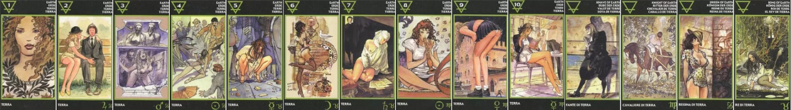

ТУЗ ЗЕМЛИ
В личных отношениях Туз Земли выражает благосклонность, а также внимание со стороны предполагаемого или реального партнёра. Так в "Эротическом Таро Манары" на карте изображена женщина, грудь которой украшают растения. Растения, как некий эфирный (а по тантрическим понятиям – сексуальный) элемент, неразделимы с женщиной. И карта символизирует здесь притягательность, магнетизм, экстаз.
Расчет, хозяйственность, материальное благополучие. Реализм, упорство, устойчивость. Семья, брак или желание этого. Отношения стабильные, прочные, спокойные, надежные. Но во многом построенные на трезвом расчете, выгоде.
2 ЗЕМЛИ
Несерьёзность, лёгкость отношения к жизни подчёркивает двойка Монет в "Эротическом Таро Манары". На скамейке сидят мужчина и женщина. Женщина стройна и красива, одета в облегающее короткое платье. На ней только что снятая с мужчины шляпа. Одна рука обнимает слегка опешившего спутника, другая – ласкает его гениталии. Мужчина, наоборот, одет в строгий костюм с галстуком и всем своим видом выражает серьёзность, переходящую в недоумение: - Как, на скамейке, в парке? В этой карте воплотившаяся в образе женщины жизнь оказывается более поверхностна, чем казалось ему. Двойка Земли символизирует возбуждение, игривость, наслаждение, безвредные шутки.
"Прощупывание" ситуации, проверка, взвешивание "за и против". Легкое кокетство в самом начале отношений с целью определить - насколько партнер подходит для серьезной связи. Присутствует меркантильный, практический интерес - чем партнер может быть полезен, выгоден для брака. Расчет, планирование. Если речь идет не о начале отношений, то один партнер пытается "прощупать" другого для своих целей. Один активен, другой безынициативен.
3 ЗЕМЛИ
В этой карте положительные эмоции сочетаются с работой, с делами. В "Эротическом Таро Манары" на ней изображено строящееся здание. Внутри виден мужчина в фартуке мастера, любующийся обнажённой женщиной. А внешняя часть здания украшена скульптурной композицией, изображающей супружескую пару. Внешне всё выглядит вполне пристойно, но внутри… Подобным изображением тройка Земли символизирует и "служебный роман", и вечеринки в коллективе сотрудников, и работу по дому. Порой она может сказать, кстати, о приобретении жилья или недвижимости.
Благословенный союз. Брак, семья, в соответствии с социальными нормами. Открытые отношения, одобренные окружающими, продолжающие семейные традиции. Если они только начались, то имеют большой потенциал. Стабильные и устойчивые. Хороший секс в рамках семьи. В позиции будущего - прекрасные перспективы. Это одна из карт брака.
овных страстях никто не думает - для пары важно хорошее материальное благосостояние. Союз держится не на эмоциях.
4 ЗЕМЛИ
Жизнь устроена так, что не бывает достаточно количества денег или удовольствий. В "Эротическом Таро Манары" на карте четвёрки Монет изображена женщина в одном нижнем белье, которая на коленях ползёт к прилично одетому мужчине. Она даже не стесняется того, что полуобнажена, стараясь показать, что между ними что-то такое было. Окружающие их люди удивлены подобным пассажем. А женщина пытается вернуть себе своё. Ей безразличны чувства другого, но важно самоудовлетворение или то, что партнёр может ей дать. Таким символическим образом четвёрка Земли нередко сообщает об эгоизме, стремлении жить за чужой счёт, боязни потерять роскошь.
Стремление не упустить своего, отстоять свои позиции, несмотря ни на что, даже на неожиданный скандал в общественном месте. Ситуация очень устойчивая, стабильная - все остаются при своем, если хорошо - то надолго, если плохо - тоже надолго. Стресс, но быстро проходящий. Все скоро вернется "на круги своя", к привычному образу жизни. Прагматизм и расчет в отстаивании своих собственнических прав, несмотря ни на какие эмоции.
5 ЗЕМЛИ
"Наклонная плоскость" жизни заставляет человека скатываться всё дальше и дальше от своей мечты. Сможет ли он когда-нибудь совершить "поступок", расправить крылья? В "Эротическом Таро Манары" эту мысль олицетворяет "падшая" женщина. В отличие от стоящих вокруг людей, она вынуждена склониться к лежащим на мостовой мусору и грязи. Этим изображением пятёрка Земли выражает трудности в жизни и, часто, необеспеченность человека, безвыходность создавшегося положения.
Потеря и поиск. Кризис, состояние униженности, раздавленности. Комплекс неполноценности, отверженность. Отношения потеряны, либо потерян их смысл. Однако, несмотря на плачевное положение вещей, оптимизм все-равно не покидает, благодаря чему есть попытки найти в этом союзе хоть какие-то плюсы, зацепки, что-то хорошее, обнадеживающее. Переоценка ценностей после кризиса.
6 ЗЕМЛИ
Доброе отношение, изысканные подарки и тонкий вкус дарителя символизирует шестёрка Земли в личных отношениях. В "Эротическом Таро Манары" на карте изображена стоящая возле плетёного кресла женщина. Уникальной выделки бельё и чулочки в чёрную сетку подчёркивают её прелестную смуглую кожу. Возле неё висит красивая старинная лампа. А рядом сидит белый голубь. Одежда женщины и окружающие её вещи сбалансированы по стилю – так на карте выражается гармония, тонкий вкус. Нередко шестёрка Денариев может говорить, что загаданный человек щедр, что много времени и денег он уделяет благоустройству жизни, своему внешнему виду.
Отношения, которые держаться исключительно на деньгах, без любви. Один содержит, платит, а другой выполняет его прихоти. Ярко выраженный расчет, без тени эмоций. Исключительный прагматизм и меркантильность, причем взаимные. Партнеры хотя и вместе, но одиноки. Однако, их это не заботит - у них другие интересы. Самолюбование, эгоизм, претензии на шикарную жизнь. Взаимное использование без малейшего личностного отношения.
7 ЗЕМЛИ
Проблемы скоро решатся, и жизнь потечёт по накатанной колее. Подобную веру и ожидание символизирует в колоде "Эротического Таро Манары" женщина, перечитывающая старые письма. Она ожидает своего любимого. Он должен прийти. И зрителю он уже виден на пороге, то есть за спиной женщины. Его задержали дела, бизнес. Своим изображением карта показывает, что скоро надежды оправдаются. Но если она выпала в неблагоприятном окружении, видимо, произойдёт что-то не так. Возможны, например, изменения в отношениях.
Обратная сторона жесткой прагматичности - материальная зависимость, которая, в итоге, не принесла счастья из-за неудовлетворенной потребности в любви. Жизнь комфортна и уютна в финансовом плане, к чему и стремились. Однако, установка "стерпится-слюбится" не сработала. Отношения холодные, полные разочарования и одиночества. Секс в паре заменяется на самоудовлетворение от фантазий и ностальгии по прошлой любви, которая была когда-то невыгодной и потому сейчас потеряна. Воспоминания и фантазии в данный момент более предпочтительны, чем реальный партнер рядом, к которому нет никаких чувств.
8 ЗЕМЛИ
В колоде "Эротического Таро Манары" на карте восьмёрки Земли изображена рыжеволосая флейтистка. Мелодия её флейты зачаровывает, заставляет людей плясать "под её дудку". Сама она, подобно факиру, сидит, подобрав под себя ноги. Возле неё извивается кинематографическая лента, напоминая двигающуюся в такт музыки змею. Кого же очаровал "рыжик" на этот раз – чьего-то супруга, начальника, подчинённого? Нередко её образ в раскладе действительно символизирует любовницу, а порой изысканный вкус мужчины, но чаще – человека с незаурядными руководящими способностями.
Спокойное уединение, холодная голова, управление ситуацией. Переосмысление отношений, расстановка акцентов, внутренняя работа. Настрой на то, чтобы временно побыть одному и подумать над воспоминаниями, которые сейчас значат больше чем реальность. Перепросмотр чувств с легкостью и спокойствием в душе. Карта может указывать на временный перерыв в отношениях, уединенность. Если партнеры вместе - у них спокойные отношения, когда хорошо даже без внешних событий. Все происходит внутри. И не столь важно, рядом сейчас партнер или нет. Нет интимной близости. Иногда карта указывает на родство душ и общее кармическое прошлое.
9 ЗЕМЛИ
Карта девятки Монет говорит о том, что мечты в жизни потихоньку становятся реальностью, происходит приобретение богатств и стяжание других благ. Здесь даже партнёр видится как заслуженное приобретение типа "славянского шкафа". И на него направлен "взгляд свысока". Этот взгляд можно заметить на изображении девятки Земли в "Эротическом Таро Манары". Огромная девочка-переросток, которой по пояс дома, склонилась, чтобы получше разглядеть стоящую на площади скульптуру мужчины. Реальный мужчина, кажущийся по сравнению с ней очень маленьким, бежит, чтобы случайно не попасть под безразмерный ботинок. Персонаж данной карты обладает неоспоримым преимуществом перед другими людьми. И образ девочки-переростка при гадании сообщает о преимуществах человека, его материальном достатке, уверенности в себе и спокойствии.
Быстрый рост. Появляются новые возможности, но из-за того, что рост стремительный, сложно вовремя осознать их. В итоге - попытка цепляться за старое. Отношения двух разных людей, которые не совпадают в важных вещах. Один перерос другого, смотрит на него свысока. Неадекватность, завышенная самооценка, чувство превосходства. Сексуальная дисгармония, разность темпераментов. Люди не подходят друг другу.
10 ЗЕМЛИ
Выраженная в десятке Монет собственность создаёт положение в обществе, а имея положение человек порой затрудняется в выборе достойного партнёра, любовника. В "Эротическом Таро Манары" на карте изображена сидящая в кафе посетительница. Она одета в деловом стиле. В одной руке она держит наполненный вином бокал, в другой – книгу. Так карта символизирует, что фактически у дамы есть всё. И есть чем занять себя. Однако за окном прогуливается пара влюблённых, а она одна. Рядом с ней виден обслуживающий кого-то другого официант. Но на него прекрасная посетительница не может даже обратить внимания. Её образ в раскладе означает обеспеченность, комфорт, стеснительность или чрезмерные претензии человека. Хотя порой десятка Земли действительно олицетворяет богатую наследницу из "света", бизнесвумен.
Всё пройдено и пережито. В отношениях лёгкая романтика и безразличие к сексу. Во взаимоотношениях интеллектуальный интерес или привычка.
Истинная самодостаточность от "хорошей" жизни. Впрочем, она уже доходит до легкой мечтательности и желания найти что-нибудь новое в книгах и духовном развитии. Материальный план полностью удовлетворяет. Связь столь устойчива и стабильна, что хочется книжной романтики. В данный момент, из-за пресыщения, нет и сексуального влечения. Уход в интеллектуальные интересы. Сейчас не до страстей. Но пара устойчивая, отношения стабильные, хотя и лишены тепла.
СЛУГА ЗЕМЛИ
Нередко образ юного Вестника может выражать растраты денег на удовольствия, а также свойственные детям наушничество, фискальство. Недаром в колоде "Эротического Таро Манары" Слуга Земли изображён отбрасывающим большую серую тень. Она принадлежит юноше, который стоит, прижавшись к стене, возможно подслушивая. Подобно маленькому иезуиту, он смиренно сложил руки. Он старается выглядеть примерным. Однако, как известно, в тихом омуте черти водятся. Что в следующий момент сделает "милый мальчик" – никому неизвестно. Карта часто говорит о ненадёжности, незрелости, возможности сболтнуть лишнее, а порой и о причастности некоего лица к "тайной канцелярии".
Сплетни, интриги, компроматы, жульничество, мошенничество, вероломство «за спиной», лицемерие, хитрость и нечестность. Эта карта неприятная и при появлении ее в раскладе стоит быть осторожнее - можно попасть в нехорошую ситуацию. Одиночество, обманы, зависимость, тайные пороки. Отношений как таковых и нет – они разрушаются, так и не начавшись. Кто-то может вести себя неподобающим образом, имеет злые умыслы. Закомплексован, озлоблен на весь мир, смотрит на всех свысока. Подставляя других, чувствует себя выше. В сексе – проблемы. Имеется какая-то ущербность, неполноценность и компенсация этого в виде воинственного поведения. Могут быть и заболевания половой сферы. В лучшем случае карта покажет ситуацию, где что-то нужно держать в тайне, хотя это и приносит страдания.
ВСАДНИЦА ЗЕМЛИ
Парадоксально, но Всадницу Земли интересуют в жизни не личные отношения и любовь, поскольку это несерьёзно, на это жаль тратить время, а дела. Профессиональные заботы, развитие техники увлекает эту Всадницу. Прекрасная наездница с распущенными волосами так ладно сидит в седле, что закрывает за собой загон, не слезая с лошади. Она направит путь именно туда, где она нужнее всего. И появление её образа в раскладе часто говорит о помощи специалиста, которая придёт вовремя. Хотя, если карта Всадницы Земли выпадет в неблагоприятном окружении, это означает, что с создавшейся ситуацией уже не справится, видимо, даже профессионал.
Деловитость, прагматичность, хозяйственность. «Все схвачено» и под контролем. Везде царит порядок и организованность. Трудолюбие. Пунктуальность и точность в словах, делах, дисциплина и ответственность. Отношения прочные, устойчивые, надежные, зрелые, основаны на материальном благополучии, выгоде, трезвом расчете. Партнеры накрепко привязаны друг к другу, но не чувствами, а общими делами, хозяйством и т.д. Не вмешиваются в дела друг друга. Каждый четко выполняет свои функции. Все четко распределено и известно наперед. Тут нет места неожиданностям и импульсивным поступкам. Все работает как налаженный механизм. Уверенность друг в друге. Надежность и спокойствие. Сотрудничество. Карта показывает медленное, но устойчивое течение событий.
КОРОЛЕВА ЗЕМЛИ
В колоде "Эротического Таро Манары" олицетворяющая Королеву Земли молодая женщина напряжённо стоит, прижавшись спиной к каменной стене. Глаза её закрыты, ведь для мечты не нужно физическое зрение. Рядом, на другой стене, можно заметить, как проступают черты предмета её эротических фантазий. Таким образом, не замечая даже того, она ворожит: приходит её "суженый ряженый". И при гадании можно сказать о способностях такой девушки. Часто эта карта олицетворяет просто женщину с великолепной фигурой, а порой также – готовящуюся вступить в права наследницу.
Обычно карта указывает на женщину с практичным характером. Она трезвомыслящая, прагматичная, добросовестная, аккуратная, хозяйственная и экономная. Верная, чувственная, сдержанная, спокойная. У нее хороший вкус. Ее недостатки – это подозрительность и излишнее недоверие. Она признает лишь то, что можно пощупать. Может быть зациклена на материальном мире и мрачновата. Если речь не о женщине, то карта покажет не легкую ситуацию в отношениях. Отчаяние, «загнанность в угол», из которого пока не видно выхода (но это не значит, что его нет – стоит лишь посмотреть вокруг чтобы его увидеть). Безысходность, тупик в отношениях, когда кажется, что ничего нельзя изменить. Разочарование, сильные переживания. Потеря, или страх потери. это может быть и указанием на разрыв. Сексуальность по этой карте сильная, но не получает выхода, подавлена из-за ограничений и потрясений.
КОРОЛЬ ЗЕМЛИ
Амбиции, похоть и страсть могут быть скрыты под благообразным видом, сутаной, личиной интеллигентности. На карте "Эротического Таро Манары" видно, как эти пороки скрываются под одеждой учителя. Учитель, спрятавшись за кустом с облетевшими листьями, осторожно заглядывает под платье школьницы, а молодая девушка будто не замечает этого. Она осторожно трогает рукой тёмную воду – впервые испытывает свои чувства. "Педагог" пользуется положением, чтоб завести интимную связь, вновь "испытать" молодость и сохранить это в тайне. Поэтому карта Короля Земли часто символизирует человека, привыкшего пользоваться своей властью, чужой зависимостью, беспомощностью, глупостью или наивностью.
Карта показывает мужчину практичного, прочно стоящего на ногах, спокойного, уверенного и состоятельного. Он отлично разбирается в материальных вопросах. Хороший хозяин. Верный, сексуальный, ценит физические удовольствия, комфорт, уют и красоту. Но собственник. Ревнив. Может быть медлительным тугодумом, эмоционально закрытым и слишком подозрительным человеком. Пессимизм и лень – тоже его недостатки. Привык рассчитывать на себя и не очень верит людям. Если речь не о мужчине, то отношения по этой карте странные – там есть тайны и неясности. Проблемы от странностей в любви (это могут быть и сексуальные извращения, нетрадиционная ориентация), комплексов, боязни физического контакта. Страхи, слабость, трусость, попытки совершать странные вещи, не показывая свое истинное лицо и намерения. Игра чужими страстями, манипулирование. Провокация на нелицеприятные действия.